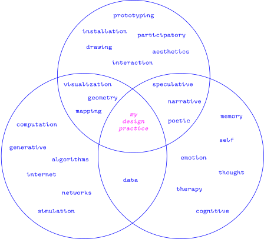

-
underneath
a living index of my projects, writing, etc.
-
the moss corpus
an ongoing collection of my writing
-
garden of cyber studies
an evolving collection of resources gathered through teaching
About

| Bio | |||||
|---|---|---|---|---|---|
Birth |
May 22, 1995 | American | |||
Focus |
I like creating tools and environments for people to collect, reflect and cherish memories. |
||||
Interests |
data | handmade web | world-building | ||
| human memory | journaling | dreams | |||
| neuroscience | visualization | encodings | |||
| Contact | |
|---|---|
Location |
Bay Area, California |
Emails |
lexcsv@gmail.com abonomo@ucdavis.edu |
Elsewhere |
Are.na Github |